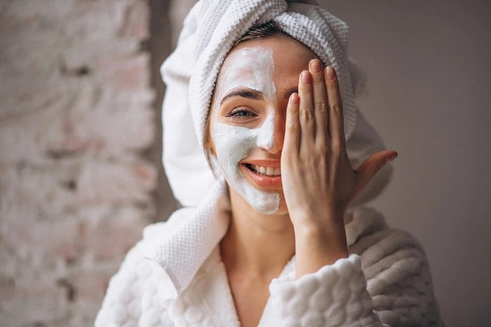

Prince
6 Home Remedies for Glowing Skin

Introductory Paragraph
Having healthy, glowing skin is something that everyone wants. But, the market is flooded with products that promise to give you the perfect skin. Instead of relying on expensive products, you can try some simple home remedies that will make your skin look radiant and healthy. These natural ingredients are easily available and have been used for centuries to improve the health and appearance of the skin.
Home Remedies with natural ingredients
Turmeric
Turmeric has anti-inflammatory and antioxidant properties that can help to brighten and even out the skin tone. Mix 1 teaspoon of turmeric powder with 1 tablespoon of honey and 1 tablespoon of milk to make a paste. Apply this paste to your face and leave it on for 15-20 minutes before rinsing it off with warm water. Repeat this 2-3 times a week.
Virgin coconut oil
Coconut oil is known to moisturize and nourish the skin. Take a small amount of coconut oil and massage it into your skin before going to bed. Leave it on overnight, and rinse it off with warm water in the morning. Repeat this daily for best results.
Aloe vera to keep skin strong and healthy
Aloe vera has anti-inflammatory and moisturizing properties that can help to soothe and hydrate the skin. Apply aloe vera gel directly to the skin, leave it on for 15-20 minutes, and then rinse it off with warm water. Repeat this 2-3 times a week.
Milk
Milk contains lactic acid, which can help to exfoliate and brighten the skin. Mix 1 teaspoon of milk with 1 teaspoon of honey to make a paste. Apply this paste to your face and leave it on for 15-20 minutes before rinsing it off with warm water. Repeat this 2-3 times a week.
Papaya
Papaya contains enzymes that can help to exfoliate and brighten the skin. Mash 1/4 cup of ripe papaya and apply it to your face. Leave it on for 15-20 minutes before rinsing it off with warm water. Repeat this 2-3 times a week.
Honey
Honey is a natural moisturizer and has antibacterial properties that can help to keep the skin clear. Apply a thin layer of honey to your face and leave it on for 15-20 minutes before rinsing it off with warm water. Repeat this 2-3 times a week.
Tips to get natural glowing skin
Moisturize properly after washing your face
Properly moisturizing your skin is essential to keeping it healthy and glowing. After washing your face, apply a moisturizer that is suitable for your skin type. Moisturizing helps to keep the skin hydrated and protects it from environmental damage. It is also important to choose a moisturizer that contains SPF, as this will protect the skin from harmful UV rays.
Wear sunscreen daily
Sunscreen is essential to protecting the skin from harmful UV rays and preventing damage that can lead to premature aging and discoloration. It is recommended to wear sunscreen with at least SPF 30 every day, even on cloudy or overcast days.
Find a cleansing routine that works
Having a consistent and effective cleansing routine is important for maintaining healthy, glowing skin. Cleansing helps to remove dirt, oil, and makeup from the skin, preventing clogging of the pores. It is important to choose a cleanser that is suitable for your skin type and to cleanse the skin twice a day, once in the morning and once at night.

Avoid smoke and secondhand smoke
Smoking and exposure to secondhand smoke can be harmful to the skin, causing premature aging, wrinkles, and discoloration. Quitting smoking and avoiding exposure to secondhand smoke can help to maintain healthy and glowing skin
.jpg)
Shorten your shower
Taking long showers or baths can strip the skin of its natural oils, leaving it dry and dull. It is recommended to keep showers or baths short, and to use warm water instead of hot water. Using a moisturizing body wash or soap can also help to keep the skin hydrated and glowing.
Drink more water
Drinking water is essential to keeping the skin hydrated and healthy. Aim to drink at least 8 glasses of water a day to ensure that the skin is getting the hydration it needs. Drinking water can also help to flush out toxins and impurities that can harm the skin.
Drink more water
Drinking water is essential to keeping the skin hydrated and healthy. Aim to drink at least 8 glasses of water a day to ensure that the skin is getting the hydration it needs. Drinking water can also help to flush out toxins and impurities that can harm the skin.

Diet to Follow to Get Glowing Skin
Eating a healthy diet that is rich in fruits, vegetables, and healthy fats can help to nourish and protect the skin. Include foods like avocado, berries, and fatty fish in your diet.

Best Exercises list to follow to get Glowing Skin
Exercise increases blood flow, which can help to nourish the skin and give it a healthy glow. Aim for at least 30 minutes of moderate-intensity exercise most days of the week.
Conclusion
Achieving a healthy, glowing skin doesn’t have to be expensive or time-consuming. Incorporating natural ingredients and home remedies, following a proper skincare routine, maintaining a healthy diet and exercise, and avoiding harmful habits can all contribute to achieving a radiant complexion. It is important to also note that while these remedies can be effective, they may not work for everyone, and it is always best to consult with a healthcare professional to determine the best course of action for your individual skin concerns. Remember to be patient and consistent, and with time and effort, you can achieve the glowing skin you desire.
“How can I get my skin to glow naturally?”
There are several ways to get your skin to glow naturally. Some methods include:
- 1. Exfoliating regularly to remove dead skin cells
- 2. Drinking plenty of water to stay hydrated
- 3. Eating a diet rich in fruits, vegetables, and healthy fats
- 4. Using natural ingredients such as honey, turmeric, and aloe vera on the skin
- 5. Getting enough sleep and managing stress
- 6. Wearing sunscreen daily to protect the skin from UV rays
“What drinks make your skin glow?”
Certain drinks can help to improve the health and appearance of the skin. These include:
- 1.Water: Staying hydrated by drinking water can help to flush out toxins and keep the skin looking plump and hydrated.
- 2.Green tea: Green tea is rich in antioxidants that can help to protect the skin from environmental damage.
- 3.Lemon water: Lemons are a great source of vitamin C, which can help to brighten the skin and improve collagen production.0
A diet that is rich in fruits, vegetables, and healthy fats can help to nourish and protect the skin. Some foods that are particularly beneficial for the skin include:
- 1.Berries: Berries are rich in antioxidants that can help to protect the skin from environmental damage.
- 2.Avocado:Avocados are a great source of healthy fats and vitamins that can help to keep the skin moisturized and healthy.
- 3.Fatty fish:Fish such as salmon and mackerel are rich in omega-3 fatty acids, which can help to improve the health of the skin.
Prince
follow us on :-